Seville, Biblioteca Capitular y Colombina, Sign.: 5-2-25
[folio 63r]
[1]
Omni desideranti notitiam artis mensurabilis tam novae quam veteris
obtinere certas regulas huic praesentes sub brevi compendio proposse
meo propono fideliter assignare; cujus antiquitatem per Franconem
notum omnibus tradidisse. Noviterque per Philippum in maiori parte subti
liter invenisse; et quia voces seu notulas proportionabiliter omnes in hoc
opere mensurare, prout longae vel breves, semibreves, ac mini
me figurantur. Igitur ad valorem et figurationem ipsarum breviter procedamus.
[2]
Longa igitur est sub forma quadra habens tractum a parte dextra ascendentem
vel descendentem, vel duos, quorum dexter excedit sinistrum. Et
talis vocatur plica longa. Et valet tria tempora in modo perfecto, duo
autem in imperfecto. Modus perfectus cognoscitur per pausas, scilicet, quando pausae
inter longas sunt perfectae, vel quando de longa ad longam numerus ternarius
computatur. Modus autem imperfectus est ipsas breves vel tempora per
numerum binarium computare. Et dicitur imperfectus eo quod numerus binarius
est imperfectus. Numeros vero ternarius perfectus est assumptus a Trinitate etcetera.
Exemplum omnium istorum:
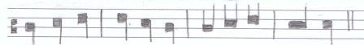
[3]
Item longa licet valeat tria
tempora in modo perfecto sicut
dictum est, tamen tribus modis imperficitur. Videlicet quando sola brevis sequitur, aut
praecedit. Vel quando plures quam tres breves ipsam secuntur similiter
imperficitur. Ut hic patet.
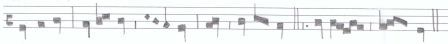
[4]
Si autem duae, vel tres bre
ves tamen secuntur ipsam longam
nulla sola brevi praecedente,
ipsa longa perfecta est; nisi punctus divisionis ponatur inter primam
brevem et secundam; vel inter primam et alias subsequentes. Similiter, longa
ante longam perfecta est. Et si longae addetur punctus perfectionis, perfecta est
et in modo imperfecto. Ut hic patet:
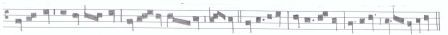
[5]
Est autem quaedam alia nota; quae duplex longa vocatur. Et in duplo latiorem
ipsa longa. Talis autem valet .VI. tempora in modo perfecto, et quatuor in
modo imperfecto; et duobus modis tamen imperficitur. Videlicet, a sola brevi sequen
te, vel praecedente. sicut inferius patebit, vel quando plures quam tres secuntur
ipsam. Et tunc non valet nisi quinque tempora. Ut hic patet.

[6]
Brevis sive forma quadrata figuratur, carens omni tractu. Si vero tractum
habuerit ante sinistram, vel duos quorum sinister longior sit dextro, tunc
illa, plica brevis appellatur; et valet tres semibreves in tempore
perfecto, duas autem imperfecto. Tempus perfectum est trium semibrevium assumpto
pro qualibet brevi. Tempus imperfectum est, quando dividitur per duas semi
breves, variando, numerando, et mensurando, ut hic patet inferius. Volue cartam.
[folio 63v]
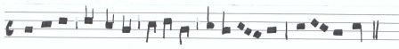
[7]
Item brevis tribus modis imper
ficitur, videlicet, quando sola semi
brevis ipsam sequitur, aut
praecedit; vel quando sunt plures quam tres ipsam sequentes, ut hic patet.
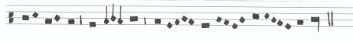
[8]
Et si duae vel tres semibreves
secuntur tamen nulla so
la semibrevi praecedente,
perfecta est ipsa brevis, nisi punctus divisionis ponatur inter primam et secundam
semibrevem, vel alias subsequentes.
[9]
Item sicut longa ante longam est perfecta semper, sic brevis ante brevem
est perfecta semper. Et ex hoc sequitur quod similis ante similem non unquam
imperficitur. Etiam punctus immediate postpositus perficit ipsam brevem
in tempore tamen imperfecto, nisi per divisionem modi forsitan poneretur, et
tunc in medio.

[10]
Item brevis imperficitur dupliciter, videlicet, quando a sola minima sequente, vel etiam
a pluribus quam tres ipsam sequentes. Sed multi tenent quod imperficitur
per minimam a parte ante. Dico quod falsum est; si sequitur alia bre
vis quam maxime. Sed forte dicam quod nullo modo; et ratio quia minima non
imperficit totam brevem igitur partem; cum partes sint duae; igitur aliquam istarum
non primam; quia prima similatur secunde; igitur secunda; et sic ex parte post.

[11]
Item brevium alia recta, alia altera. Recta, unius temporis; altera
duorum est. Unde quotienscumque duae breves inveniuntur inter duas
longas, prima est recta, secunda est altera; et vocatur sic; quia alteratur
natura sua. Similiter quia quando duae breves inter punctum divisionis et longam
vel e converso prima est altera. Ut hic patet.
[12]
Est autem semibrevis ad modum corporis obliqui, et valet tres
minimas in prolatione maiori, duas in minori, et sic distinguitur
maior et minor prolatio. Ut hic profertur.

[13]
Item semibrevis imperficitur
tribus modis sicut brevis et
longa. Primo quando sola minima
eam sequitur, vel precedit, vel quando plures quam tres ipsam
secuntur, sicut dictum est de longis sive de longa.
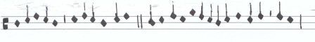
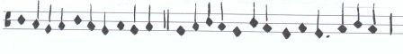
hoc exemplum vacat
[folio 64r]
[14]
Si vero duae minimae tamen ipsam secuntur nulla sola minima praecedente
perfecta est, nisi punctus divisionis sequatur inter primam minimam et secundam
vel alias si fuerint subsequentes. Ut hic.
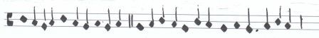
[15]
Item semibrevis tripliciter alteratur
sicut brevis, videlicet quando duae semibre
ves inveniuntur inter duas semibreves; vel inter punctum divisionis
et brevem, vel e converso. Ut hic.
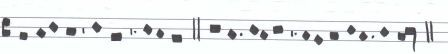
[16]
Minima etiam duobus modis
alteratur. Primo modo ut dictum est
de semibrevibus et brevibus, scilicet, si duae minores inter duas maiores
etcetera. Sic igitur duabus minimis positis inter duas semibreves, secunda
est altera, nisi ad eas reducatur deest. Secundo modo si quinque
ponantur minimae pro uno videlicet tempore ultima est altera. Et ratio
hujus est, quia ubicumque aliquid artificialiter deest, artificialiter debet reparari.
Sic est hic. Tertio modo minima alteratur si duae ponantur inter
punctum divisionis et maiorem. Ut patet per exemplum.
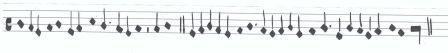
[17]
Et est sciendum quod duplex est
punctus, divisionis, scilicet, et perfectionis. Divisionis
dividendo brevem, a longa
in modo perfecto. Semibrevem a minimaminima brevi in tempore perfecto, mi
nimam a semibrevi in maiori prolatione. Adhuc dividendo
minimas propter alterationem. Punctus vero perfectionis est qui perficit
longam modo imperfecto. Perficit brevem tempore imperfecto. Perficit semi
brevem minori prolatione. Punctus enim divisionis de quo iam dictum est
potius dicitur imperfectionis, quam perfectionis; quia imperficit longam dividendo
brevem, et hoc in modo perfecto; imperficit brevem dividendo semibre
vem, et hoc in tempore perfecto; imperficit semibrevem dividendo mi
nimam, et hoc in maiori prolatione. Est etiam punctus divisionis, qui
habet dividere tempora, et hoc secundum ergo ssities:
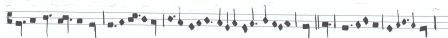
[18]
Cum duplex sit modus, tempus et prolatio. Videndum est de signis per quae
distinguuntur. Quadrangulus cum tribus tactulis, ponitur pro modo
perfecto. Sed si ponatur cum duobus, ponitur pro modo imperfecto. Circulus
vero pro tempore dicas, sed pro perfecto. Et semicirculus pro tempore imperfecto
ponitur. Nam pro maiori prolatione ponere debemus tria puncta;
pro minori vero duo. Ut patet hic de omnibus.

[19]
Sciendum circa coloratas notas, quod rubeae vel nigrae ponuntur
ad doctrinam modi temporis et prolationis. Ita quod si nigrae longae fu
erint de modo perfecto. Rubeae de modo imperfecto, et e converso. Si nigrae
breves ponuntur pro tempore perfecto, et rubeae pro imperfecto, vel e converso.
[folio 64v]
[20]
Si vero semibreves nigrae pro maiori prolatione ponuntur, et rubeae
pro minori vel e converso. Sed advertendum de omnibus hijs, hoc totum habet verum
nisi forte ad invicem ordinetur, scilicet, brevis cum longa, semibrevis cum
brevi. Et de omnibus veritas patet in tenore de In arboris. Innova
fer animus.
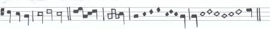
[21]
Sincopa est partim seperatarum modi, temporis et prolationis reducentium
ad earum totum, secundum qualitatem et propriam ipsarum formam:
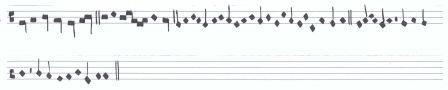
[22]
Ligaturarum autem alia ascendens, alia descendens. Et de hijs omnibus
tam ascendendo, quam descendendo, videndum est. Sed de primis et ultimis
est sciendum, quod prima ligatura descendens sine tractu longa dicitur esse
sed si habuerit tractum a parte sinistra descendentem brevis est.
Praeterea omnnis quadra in fine ligature descendendo etiam est
longa. Sed dico in ascendendo quod tam prima quando est brevis; nisi tractum
habuerit a parte dextera descendentem et e converso. Sed si habuerit fuerit
ascendens vel descendens, et prima habuerit tractum sinistrum ascen
dentem, semper primae duae sunt semibreves. Reliquae sequentes
breves sunt. Ut hic apparet.
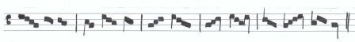
[23]
Pausa est vocum emmissio, seu aspiratio mensurata pro tot
temporibus quot continet spatia. Sed ultra tria non est abire. Et licet talis, pau
sa vocari possit, tamen est doctrina; quia illa ultra tria est privatio temporis.
Sed alia unius partis precise. Est enim et alia pausa quae continet
medium spatium, et talis est semibrevis et minimae. Sed haec
est doctrina, quia quae ponitur sub linea est semibrevis, quae ponitur
super lineam, est minimae. Ut hic apparet.
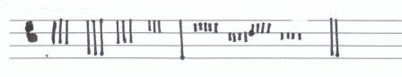
Images
Images are reproduced here with the kind permission of the Biblioteca Capitular y Colombina, Seville and may not be downloaded.
[folio 63r] CLICK TO ZOOM
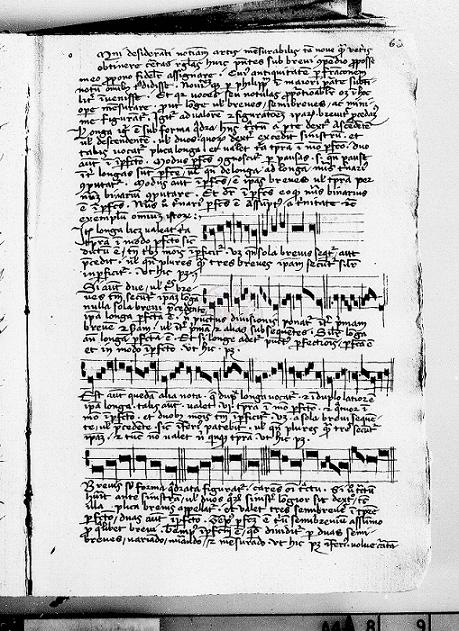
[folio 63v] CLICK TO ZOOM
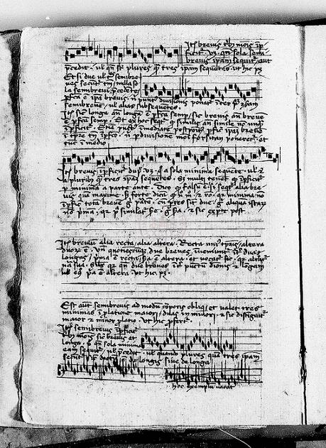
[folio 64r] CLICK TO ZOOM
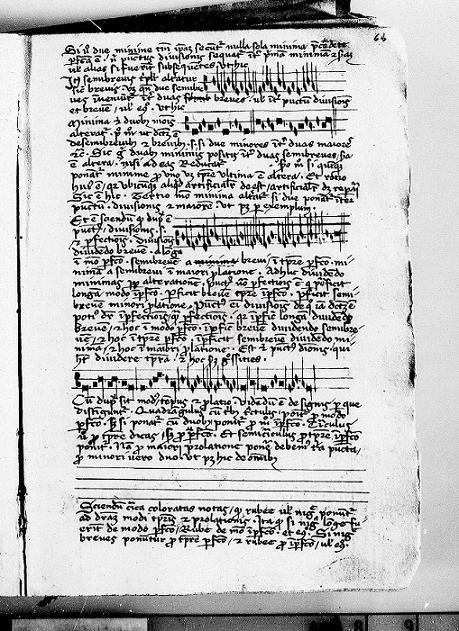
[folio 64v] CLICK TO ZOOM
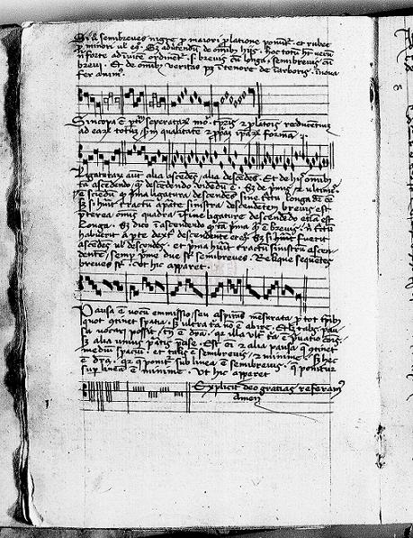